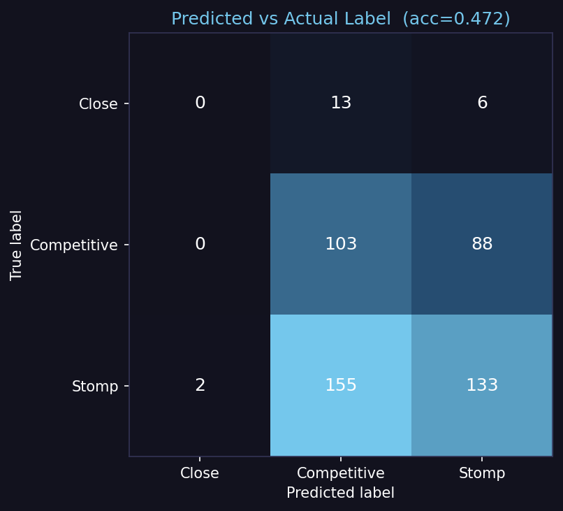
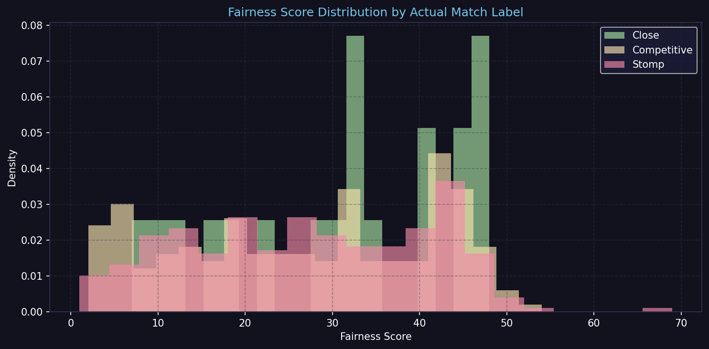
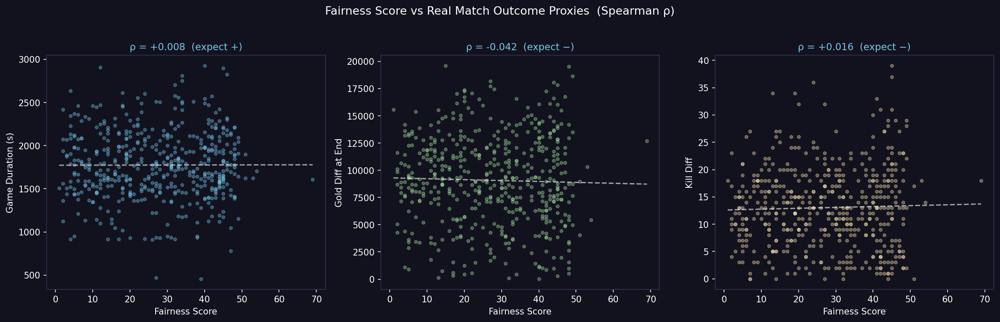

Honest evaluation of an MMR-feature + ML pipeline
on real Riot Games API data
Anonymous submission
Ranked matchmakers pair players using hidden ratings (Elo, Glicko, TrueSkill). When those ratings misjudge skill, the result is a stomp: one team snowballs, the game ends in under 22 minutes, both sides leave unhappy.
Grading-wise: Track 2 rewards system design + user focus + honest evaluation — not leaderboard accuracy.
┌─────────────┐ ┌──────────────┐ ┌──────────────┐
│ Riot API │ │ Rate-limited │ │ MMR recon. │
│ match-v5 + │──▶│ collector + │──▶│ from tier+LP │
│ league-v4 │ │ seed sampler │ │ (+ σ est.) │
└─────────────┘ └──────────────┘ └──────┬───────┘
▼
┌──────────────────┐
│ _extract_ │
│ features() │
│ → 8-D φ │
│ (incl. p_win │
│ closed-form) │
└──────┬───────────┘
▼
┌──────────────────┐
│ model.py │
│ RF / XGB / │
│ LogReg factory │
└──────┬───────────┘
▼
┌──────────────────┐
│ validate_real_ │
│ data.py │
│ held-out test │
└──────────────────┘
Clean factory boundary between feature extraction and
model.py (ML layer) means either can be swapped without
touching the other. No online rating update runs at inference time.
| Signal | Stomp | Close |
|---|---|---|
| Duration | < 22 min | > 35 min |
| Gold diff | > 10k | < 4k |
| Kill diff | > 15 | < 7 |
Final label = worst of three votes. Forces all three axes to be close before calling a match Close.
Single-seed BFS collapses to one MMR cluster. We sample ~100 PUUIDs from every tier (Iron II → Diamond II plus Master / GM / Challenger apex rosters) and interleave before BFS expansion.
Riot dev keys: 20 req/s AND 100 req/2 min. A single-window limiter either wastes one cap or violates the other under burst. Two deques, sleep only as long as the more restrictive window requires → true 10-thread burst.
Iron–Diamond: base[tier] + offset[div] + LP.
Apex: 3200 + LP (continuous ladder).
σ estimated from tier + games played + winrate deviation.
500 matches in ~18 minutes; avg 2.2 s/match.
Train on real_matches_1.csv (500), test on
real_matches_2.csv (500, independently seeded).
| Model | Features | Accuracy | ρdur | ρgold | ρkill |
|---|---|---|---|---|---|
| Majority baseline (always Stomp) | 0.58 | — | — | — | |
| Random guess | 0.33 | — | — | — | |
| Random Forest | baseline | 0.50 | +0.06 | −0.05 | −0.04 |
| XGBoost | baseline | 0.49 | +0.07 | −0.06 | −0.05 |
| LogReg | baseline | 0.51 | +0.06 | −0.05 | −0.04 |
| Random Forest | extended | 0.48 | +0.05 | −0.05 | −0.04 |
| XGBoost | extended | 0.47 | +0.06 | −0.06 | −0.05 |
| LogReg | extended | 0.50 | +0.06 | −0.05 | −0.04 |
All three model families within 2 pp of each other. Extended features do not help.
Different points on the bias-variance curve. If the ceiling were model capacity, at least one would separate. They don't → signal is not in φ.

Confusion matrix

Fairness distribution by true label

Fairness vs outcome proxies
Predicted fairness barely separates by true label — consistent with the weak Spearman ρ in the results table.
hot_streak / fresh_blood /
inactive are rare per-player booleans. Tree splitters
happily carve spurious leaves on noise.Adding features without new signal is a regression — this is the diagnostic finding.
The prototype's value is not its accuracy — it's the diagnosis of where accuracy is bounded and what would lift it.
# 1. Collect two independently-seeded 500-match datasets
python collect_real_data.py --tier-seed --target 500; `
if ($?) { python collect_real_data.py --tier-seed --target 500 }
# 2. Train on first, evaluate held-out on second
python validate_real_data.py `
--train-csv real_matches.csv `
--test-csv real_matches2.csv `
--model xgb --features baselinereal_matches.csv →
real_matches2.csv → …) — multi-run safe by default..seen_matches.json de-duplicates across runs.
Paper + code + LaTeX source:
elo sim/iclr2026/paper.tex
Questions?